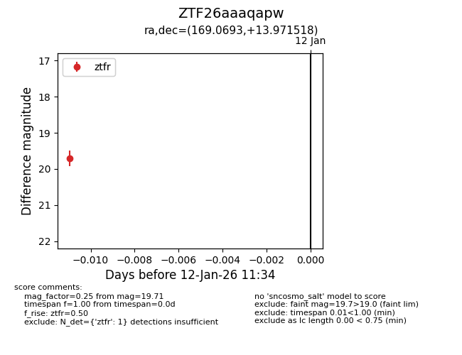
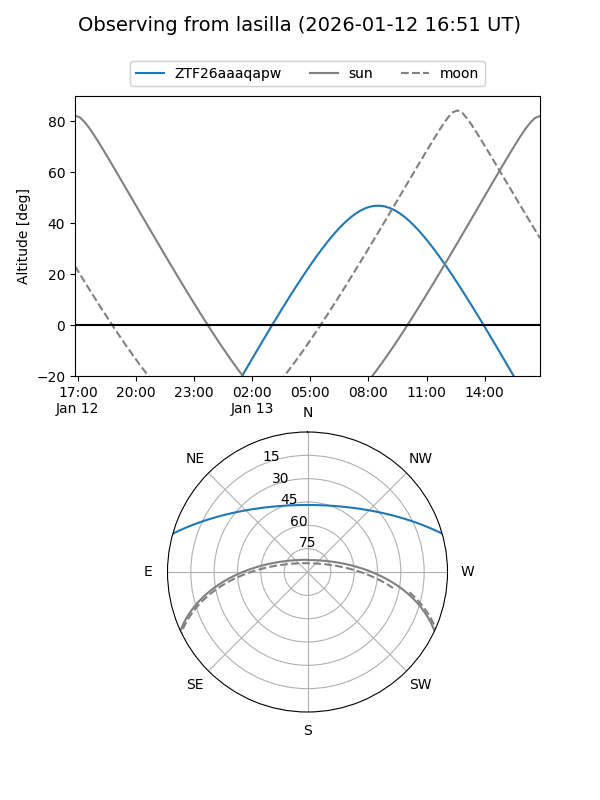
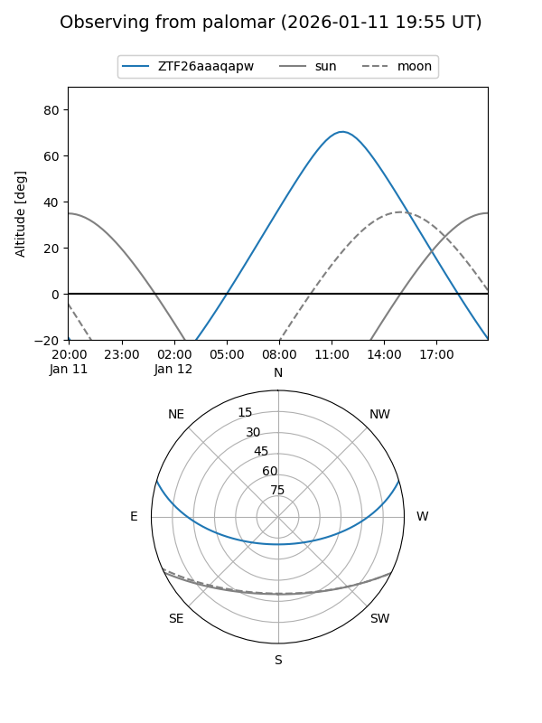

ZTF26aaaqapw
Target ZTF26aaaqapw at 2026-01-12 11:35
Aliases and brokers:
FINK: link
Lasair: link
ALeRCE: link
alt names
ZTF26aaaqapw (ztf,fink_ztf)
Coordinates:
equatorial (ra, dec) = 169.0693,+13.97152
equatorial (HMS+DMS) = 11:16:16.63,+13:58:17.46
galactic (l, b) = (238.8244,+64.20608)
Flags:
Photometry:
last ztfr=19.71
1 ztfr detections
Lightcurve

Visibility


Additional plots